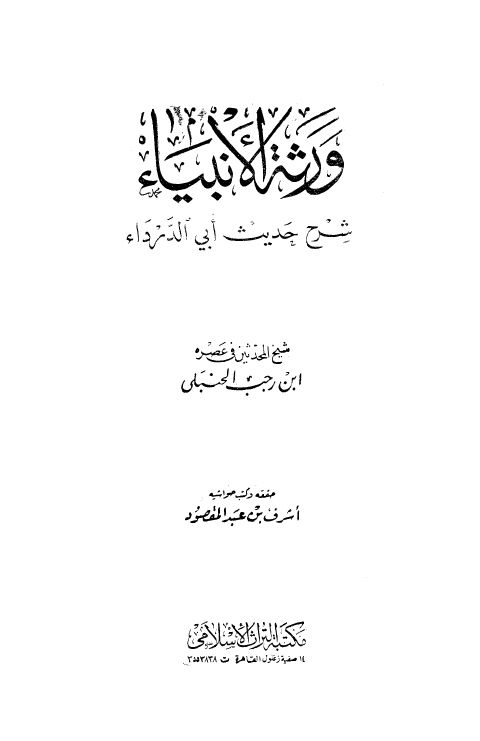
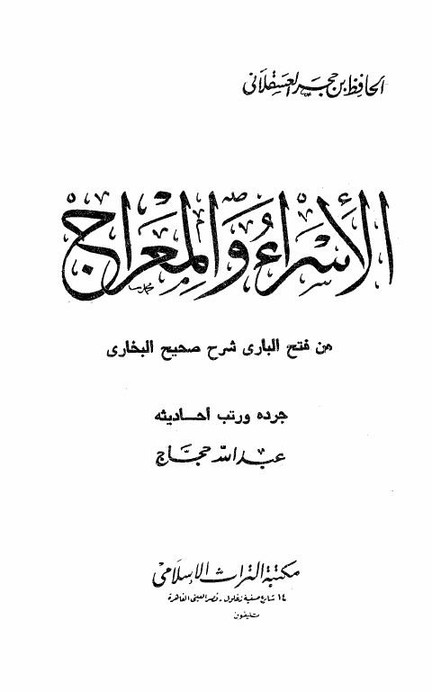
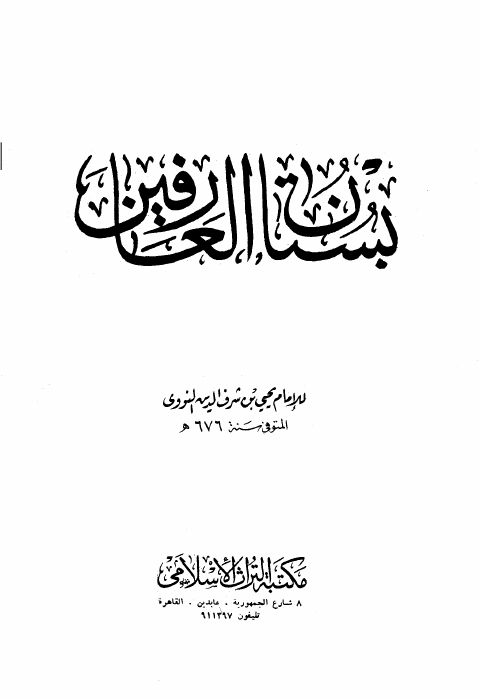
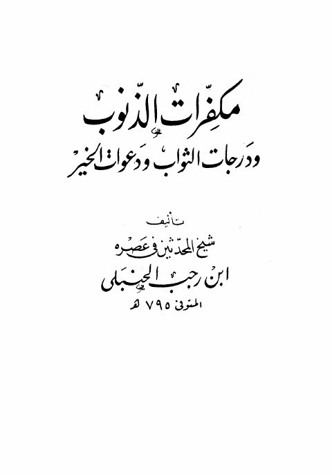

ورثة الأنبياء شرح حديث أبي الدرداء ورثة الأنبياء شرح حديث أبي الدرداء عبد الرحمن البغدادي بن رجب الحنبلي
الإسراء والمعراج من فتح الباري شرح صحيح البخاري الإسراء والمعراج من فتح الباري شرح صحيح البخاري الحافظ ابن حجر العسقلاني
بستان العارفين- دار التراث بستان العارفين- دار التراث محيي الدين يحيى بن شرف النووي
مكفرات الذنوب ودرجات الثواب ودعوات الخير مكفرات الذنوب ودرجات الثواب ودعوات الخير عبد الرحمن بن رجب الحنبلي